Analysis of Hardest SuDoKu -1
"The World's Hardest Sudoku" (2012, abbreviated as WHS) is a problem created by Finnish mathematician Arto Inkala.
The problem is on the left, the solution is on the right, and there is only one solution.
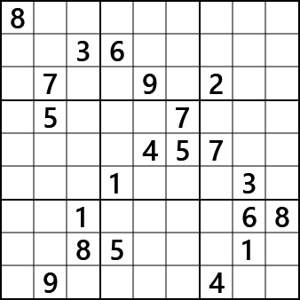
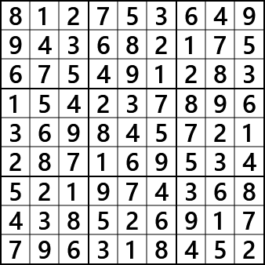
This problem is difficult to solve using a logical algorithm, and even GNPX (v4) cannot solve it.
On the other hand, solving by trial and error is possible with relatively simple code.
The solution in the above right figure was obtained using the code included in GNPX.
Please note that GNPX does not recognize Try and Error as a solution algorithm,
so it is not included in the normal solution list.
id="head_bg_LightBlue"> (1) Characteristics of WHS
- Element count
Candidate digits for WHS unconfirmed cells are distributed as follows.
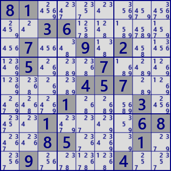
Calculate the distribution of the number of candidate digits in cells. There is only one cell with candidate number 2, which is extremely rare for a Sudoku problem. Also, the cell with candidate number 3 is 11. Which is related to the fact that there are fewer hints for solving Sudoku problems.
number of candidate digits< 2 3 4 5 6 7 8 9 number of cells 1 11 25 20 2 1 0 0 - Distribution of candidate digits
Candidate digits are displayed in color.
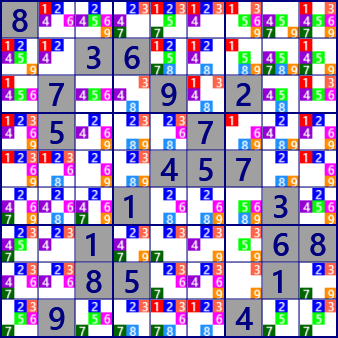
Additionally, only one digit was displayed in color. The digit 7 seems a little small, but all the digits are spread over the entire board. It is widely distributed and no distinctive features are visible. Also, any digit is placed in 3 or more places in many rows, columns, and blocks. A Strong Link with two candidates in one row/column/block is 13 links (r9#1,b8#1, c5#5,b2#5,r6#5,b6#5,r7#5, r6#7,b4#7,c3#7 ,c2#8, b4#8, b1#9)only. The lack of strong links may be a factor in the difficulty of the problem.
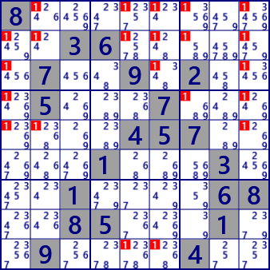 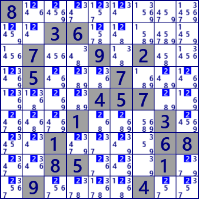 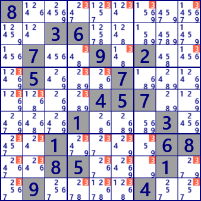 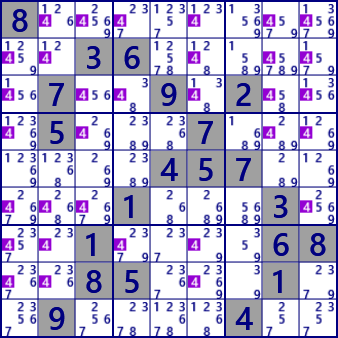 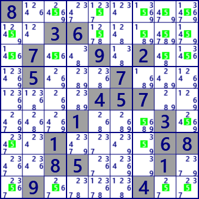 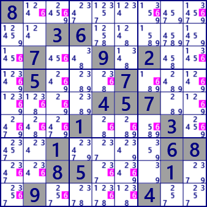 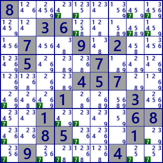 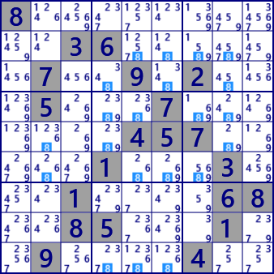 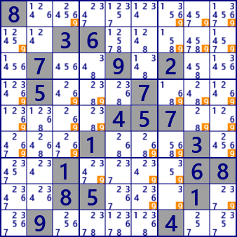
(2) WHS reduction Puzzle
WHS has 21 digits in Puzzle.
If any of these digits are excluded, it is no longer a Sudoku Puzzle.
.
For example, in the problem where r1c1#8 is left blank (see the figure below),
there are 292 number pattern arrays that satisfy this problem.
All number pattern arrays are located in the WHS_data folder.。
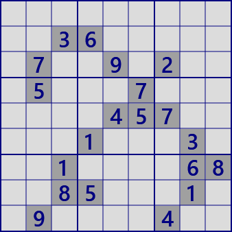
...........36......7..9.2...5...7.......457.....1...3...1....68..85...1..9....4.. solutions:292
214738659983652174675491283159367842836245791742189536521974368468523917397816425
214758693983612574675493281852367149139845726467129835521974368748536912396281457
214783659983652147675491283452367891139845726867129534521974368748536912396218475
214783659983652147675491283459367821132845796867129534521974368748536912396218475
214783659983652174675491283152937846836245791749168532521374968468529317397816425
...(6-287 omission)
985721643213654897674893251859367124132945786467182539521479368748536912396218475
985723641213654897674891253859367124132945786467182539521479368748536912396218475
985732641243651879176498253359267184812345796764189532521974368438526917697813425
985732641243651879176498253852367194319245786764189532521974368438526917697813425
985732641243651879176498253854367192319245786762189534521974368438526917697813425
There are many number patterns even in other Puzzle where the digits are left blank.
The situation is shown in the figure.
The maximum number of patterns is the Puzzle with r6c8#3 blank, which has 3408 patterns.
Furthermore, the condition for Sudoku Puzzle is to "have a unique solution",
and WHS reduced Puzzle are not Sudoku (I am aware that there are different opinions).
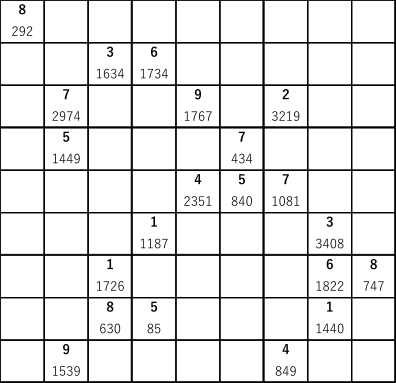
Upper row: Puzzle digits
Lower row: Number of patterns (number of patterns when the upper row digit is blank)
(3) WHS enlarged Puzzle
There are also Puzzle in which the solution digit is added by 1 to the WHS.
Applying these to GNPX(v4).
There are 60 blank spaces on the WHS, so there are 60 Puzzle.
Of these, GNPX(v4) can solve the Puzzle by adding digits in 8 places.
The algorithm used at that time is a common one in the (Finned)Fish system, ALS system, ALS-Chain, SueDeCoq, etc.
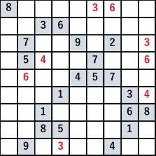
The surplus is the original Puzzle
Puzzle in which the red parts are added one by one can be solved with GNPX(v4).
WHS+r1c6#3: LastDigit[20] NakedSingle[26] HiddenSingle[13] LockedCandidate[3] LockedSet(2D)Hidden[1] Finned XWing[1] ALS-XZ[3]
WHS+r1c7#6: LastDigit[21] NakedSingle[29] HiddenSingle[9] LockedCandidate[7] LockedSet(2D)[4] LockedSet(2D)Hidden[3] LockedSet(3D)[1] XWing[1] Finned XWing[4] W-Wing[1] ALS-XZ[5] ALS-XY-Wing[3]
WHS+r3c9#3: LastDigit[21] NakedSingle[26] HiddenSingle[12] LockedCandidate[8] LockedSet(2D)[3] LockedSet(2D)Hidden[3] LockedSet(3D)[1] XWing[1] Finned XWing[4] W-Wing[1] ALS-XZ[5] ALS-XY-Wing[3]
WHS+r4c3#4: LastDigit[21] NakedSingle[28] HiddenSingle[10] LockedCandidate[5] LockedSet(2D)[6] LockedSet(3D)[1] Finned XWing[2] XYChain[1] ALS-XZ[3] ALS-XY-Wing[3] ALS-Chain[2]
WHS+r4c9#6: LastDigit[20] NakedSingle[29] HiddenSingle[10] LockedCandidate[2] LockedSet(2D)[1] LockedSet(2D)Hidden[1] SueDeCoq[1] ALS-XZ[1]
WHS+r5c2#6: LastDigit[21] NakedSingle[20] HiddenSingle[18] LockedCandidate[5] LockedSet(2D)Hidden[2] XWing[1] ALS-XY-Wing[1] ALS-Chain[4]
WHS+r6c9#4: LastDigit[21] NakedSingle[29] HiddenSingle[9] LockedCandidate[5] LockedSet(2D)[6] LockedSet(3D)[1] Finned XWing[2] XYChain[1] ALS-XZ[3] ALS-XY-Wing[2] ALS-Chain[2]
WHS+r9c4#3: LastDigit[20] NakedSingle[27] HiddenSingle[12] LockedCandidate[4] LockedSet(2D)Hidden[1] Finned XWing[1] ALS-XZ[2]
(The numbers in [] are the number of times used.) Also, none of the Puzzle in which the green numbers in the following figure were added one by one could be solved using GNPX. Including these, 52/60 (86.7%) of the Puzzle cannot be solved.
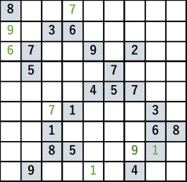
The surplus is the original Puzzle
Any Puzzle in which one green digit is added cannot be solved with GNPX.
By the way, 816/1770 (46.1%) of the Puzzle that added 2 solution digits to WHS were solved with GNP.
These Puzzle and the algorithms applied can be found in the data file.
(You can download it from GitHub).